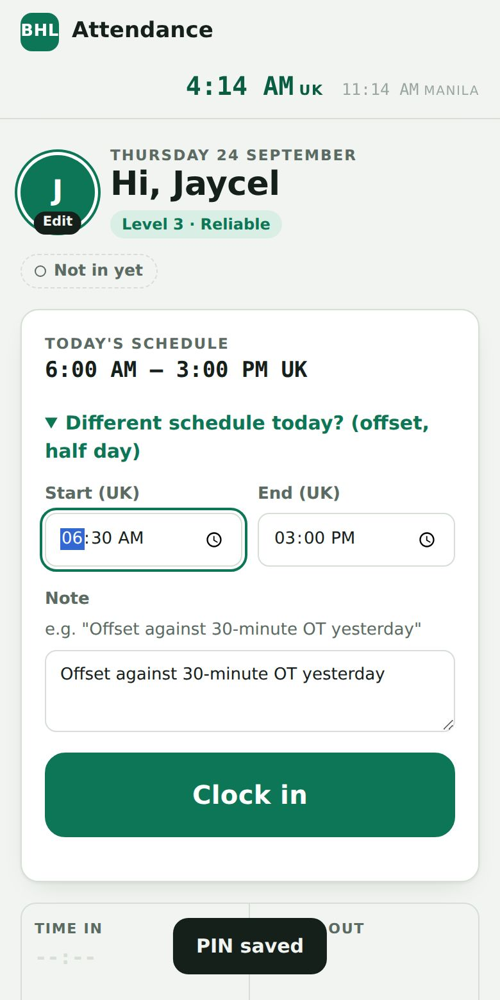
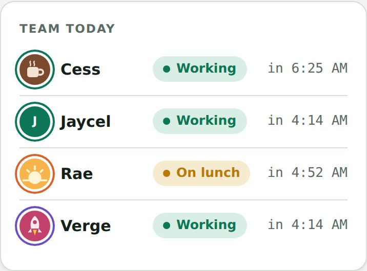
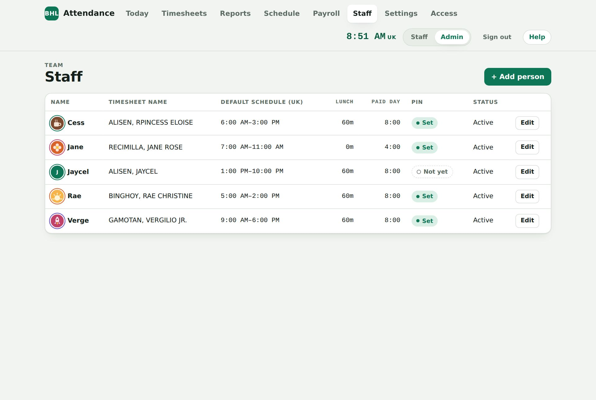
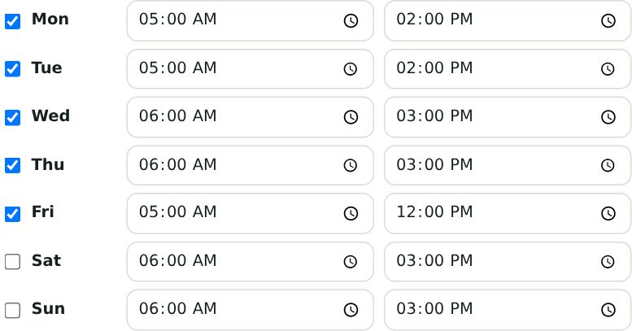

iPhone: tap Share → Add to Home Screen. Android: tap ⋮ → Add to Home screen.
Everyone on the team is shown as a card with their avatar, status and schedule. Tap your own name.
Below the cards is the team's work schedule for the week (see Your work schedule).
At the top: tap the BHL logo or Staff to come back to this screen any time. Admin opens the admin page (for admins and finance only). Help opens this guide.
TipThe big green clock is UK time, which is what your schedule uses. The small grey clock is Manila time, for reference.
The home screen: pick your name
02Create your PIN (first time only)
Your 4-digit PIN stops anyone else clocking in as you. You make it yourself the first time you tap your name.
Tap your name. If you've never used the app, it asks you to Create a 4-digit PIN.
Type 4 digits, then type them again to confirm.
From then on, tap your name and enter your PIN each time.
Heads upAfter 5 wrong PINs, your name locks for 15 minutes. If you forget your PIN, ask an admin to reset it, then create a new one.
First time: create
Every day after: enter
03Clock in
One tap. The app uses its own clock, not your phone's, so the time is always correct.
Check Today's schedule. It's your usual shift in UK time.
Working a different shift today? For example, you're taking an offset or a half day. Open Different schedule today? and set the start and end first.
Add a Note if needed, e.g. "Offset against 30-minute OT yesterday".
Tap Clock in. You'll see the time, the XP you earned and your streak.
TipClock in within 5 minutes of your start time to count as on time and keep your streak going.

Offset day with a note
On time: confetti and XP
04Start and end lunch
The big button always shows your next step: after clocking in it turns amber for lunch.
When you go on break, open the app and tap Start lunch.
When you're back, tap End lunch.
Your lunch is unpaid. If you forget to log it, your standard lunch (usually 60 minutes) is taken off instead.
TipLogging your lunch earns +5 XP a day, and 10 logged lunches unlock the Lunch Pro badge.
On lunch: the button says End lunch
05Clock out
Tap Clock out at the end of your shift. If you're leaving early, the app asks you to tap again so you don't do it by mistake.
Make sure lunch is ended (the app reminds you if it isn't).
Tap Clock out. Before your scheduled end, tap a second time to confirm.
Your timeline fills in: time in, lunch out, lunch in and time out, in UK and Manila time.
Forgot to clock out?Tell an admin. They can fix the time, and every change is recorded.
Leaving early: tap again
Your day at a glance
06Make it yours: avatar, photo, colour, tagline
Tap your avatar (the small Edit tag) or Edit profile to personalise your card. Everyone sees it on the home screen.
Pick an avatar from the 12 illustrations, or tap Upload your photo. It's cropped to a circle and shrunk automatically.
Choose a card colour. It tints your card and the ring around your avatar.
Add a tagline of up to 40 characters, like "Coffee first, then conquer".
Tap Save profile.
Good to knowKeep photos work-appropriate. Admins can remove a photo, and you can switch back to an avatar any time.
The profile editor
07Your season: XP, levels, streaks and badges
Showing up on time earns points. XP resets on the 1st of every month, so everyone starts fresh.
Streak: on-time days in a row. Days off don't break it; a late clock-in resets it to zero. Your streak also shows on your card on the home screen.
Your season card
Badges to unlock each month
1
First PunchClock in once this month
5
Early Bird5+ min early, 5 times
5
On Fire5 on-time days in a row
10
Iron Streak10 on-time days in a row
5
Perfect Week5 on-time, complete days in one week
10
Lunch ProLog lunch on 10 days
10
No Loose Ends10+ days, no missed clock-outs
2h
Extra MileEarn 2 hours of OT in a month
08Your hours and OT bank
The This month card shows the days you've worked, total hours and your OT bank.
OT earned: time worked beyond your normal paid day, counted in 15-minute blocks (36 extra minutes counts as 30).
Offset / short: a shorter day is taken from your bank.
OT bank = OT earned − offsets. Green means you have time banked; red means you owe time.
This month
09Team today and the WhatsApp message
See who's working, on lunch or finished. If the group still wants a message, the app writes it for you.
Scroll to Team today to see everyone's status.
After you clock in and after you clock out, tap the green Copy & Send to WhatsApp Group button. Your message is copied (Date / Name / Sched / Time In / Time out). Open the BHL Attendance group in WhatsApp, paste and press Send. No message is needed for lunch.
Done for now? Tap Switch person. The app also locks itself after 5 minutes of no use.

Team today
10Your work schedule
The home screen shows the team's schedule for today or the week, in UK time. Your shift for today is already filled in when you clock in.
Table shows each person's shift per day. Yellow means a rest day, green means vacation leave, orange means emergency leave.
Timeline shows each person as one coloured bar covering their shift, like a calendar. The colour key is at the bottom.
It opens on Today, showing just today's shifts. Tap This week to see the whole week.
Use ← / → to go back or forward a day (or a week). Tap Today or This week again to jump back to now.
Weeks run Sunday to Saturday. The app remembers whether you like Table or Timeline.
Leave (vacation, sick, emergency, holiday) shows as a small note under that day.
On Today, the Status column shows what everyone is doing right now: Working, On lunch, Clocked out, Not in yet, Late, Absent, Rest day, Vacation or Sick.
Your own schedule and changes
After you enter your PIN, scroll to My schedule. You can see this week and the next 2 weeks, with today highlighted.
Need a change (swap a day, rest day, leave, different hours)? Tap Request a change, change the days, add a note and tap Send for approval.
Your changes show in orange with Waiting for admin approval. You can edit or withdraw the request until an admin decides.
Once approved, the schedule updates for everyone. If it isn't approved, you'll see the admin's message.
TipNeed to swap a shift or take leave? Ask an admin. They update it here, so everyone sees the change.
Table view
Timeline view
On a computer: one colour per person, easy to see who overlaps
11See your payslips
After payroll is done, your payslip appears in the app. Only you can see it, with your PIN.
Tap your name and enter your PIN.
Scroll down and tap My payslips.
Pick a Pay period to see your basic pay, any deductions (lates, undertime, absences, other) and the amount you receive in pesos (₱) after the transfer fee.
Tap Download PDF to save a copy.
No payslip yet?Payslips appear only after an admin finalises the pay period. If the button says there are none, check again after payday.
Something looks wrong?Message an admin with the pay period and what doesn't match (for example "1 absence shown but I worked on the 15th").
My payslips in the app
12Problems and answers
I forgot my PIN
No problem. Ask an admin to reset it. Next time you tap your name, the app asks you to make a new 4-digit PIN.
It says "Too many wrong PINs"
After 5 wrong tries your name is locked for 15 minutes, to keep your account safe. Wait 15 minutes and try again. If you've forgotten the PIN, ask an admin to reset it.
I forgot to clock out, or clocked in at the wrong time
Send an admin the correct time (for example "Clocked out 3:05 PM UK yesterday"). They can fix it. You can't change past days yourself; this keeps records fair.
I can't see my name
An admin needs to add you first. Ask them to add you under Staff. Once they have, refresh the page and your name appears.
The page won't load or looks broken
1. Check your internet connection. 2. Pull down on the page to refresh (on a computer, press Ctrl+R or Cmd+R). 3. Still stuck? Close the browser and open the link again. If it's still not working, tell an admin, and post your times in WhatsApp for now so nothing is lost.
Why doesn't my phone's time matter?
The app uses its own clock, not your phone's. Changing the time on your phone makes no difference, which keeps everyone's records fair.
My streak went back to zero. Why?
Clocking in more than 5 minutes after your start time resets your streak. Days you don't work don't affect it.
I clocked out by mistake
Tell an admin. They can remove the clock-out time so you can carry on, or set the right time.
My shift today is wrong
Your shift comes from the weekly schedule an admin sets. If today is different (an offset or swap), open Different schedule today? before you clock in and add a note. For a permanent change or leave, ask an admin to update the schedule.
I don't see "My payslips" or it's empty
Payslips show only after payroll for that period is finalised. If a finalised period is missing, message an admin.
Can I use it on a laptop?
Yes. The same link works in any browser, on a phone or a computer.
Words you'll see
UK timeThe time in London. Your schedule and all records use it. It's the "GMT" from the WhatsApp group.
PINYour own 4-digit code. Don't share it: it stops anyone else clocking in as you.
Clock in / Clock outTapping the button when you start and finish work.
Overtime (OT)Extra time you work beyond your normal day, counted in 15-minute steps.
OT bankYour saved overtime. You can use it later for a shorter day (an "offset").
OffsetWorking a shorter day using time from your OT bank. Add a note when you do.
XP (points)Points for being on time, taking lunch and finishing your day. They reset each month.
StreakHow many days in a row you've clocked in on time.
Rest dayA day you're not scheduled to work. It never counts as an absence.
PayslipYour pay for a period: basic pay, deductions and the peso amount you receive.
Still stuck?Message an admin in the BHL Attendance WhatsApp group with your name, the date and what went wrong. A screenshot helps.
01Sign in
Admins and finance use the admin page with an email and password.
Sign in with the email and password you were given.
If you got a temporary password, change it straight away under Access → My password.
Use the Staff / Admin switch at the top to jump between the staff app and the admin page. The BHL logo takes you to the staff home screen.
Two rolesAdmin can do everything. Finance can view Today, Timesheets, Reports, Schedule and Payroll and download PDFs and CSVs, but can't change anything.
Admin sign-in
02The live Today board
See at a glance who's working, on lunch, clocked out or not in yet. It refreshes every minute.
The totals at the top count Working · On lunch · Clocked out · Not in · Late.
Flags show late arrivals, OT earned, short days and missing clock-outs. Notes from staff appear under the flags.
The Schedule column shows each person's shift for that day, from the weekly schedule.
People on a Rest Day or leave (vacation, sick, emergency, holiday, unpaid) show a grey pill and aren't counted as Not in.
Use the Day picker to look at any past date.
Today board
03Fix or add an entry
For a missed clock-out, a wrong time, or a day someone forgot to log.
On Today or in Timesheets → Daily entries, click Edit (or Add, or + Add entry).
Change the schedule, times (UK) or note, then click Save. Times must run in order: in → lunch out → lunch in → out.
The History at the bottom shows who changed what and when. Every edit is logged.
DeleteDeleting needs two clicks and is also recorded in the history.
Edit an entry
04Timesheets for finance
Hours per person for any period, ready for payroll or invoicing.
Pick This week, Last week, This month, Last month, or set From / To dates.
Click a person's row to filter the daily entries to them.
Download Summary CSV (one row per person) or Daily CSV (every day). CSV files open in Excel or Google Sheets. Or use Print / PDF.
Billable hrs = regular hours (capped at the paid day) + OT earned. That's the number to invoice.
Timesheets
05Reports and PDF export
Hours tallied per person by day, week or month, or across any dates you choose.
Report
What you pick
Columns
Daily
One date
Totals per person plus each person's in / lunch / out
Weekly
Any day in the week (Mon–Sun)
Hours per person per day
Monthly
A month
Hours per person per week
Custom dates
From and To
By day (≤14 days), by week (≤4 months) or by month
Choose the report type, then the date. Use ← / → to step through periods and Current to jump back.
Optionally pick one Person.
Click Export PDF for a landscape A4 report with summary, hours table, daily detail and page numbers. Or click CSV for a file you can open in Excel or Google Sheets.
Monthly report: hours by week
Weekly report: hours by day
06Add and manage staff
Staff are the people who clock in. They don't need an email, just their name and a PIN.
Staff → + Add person. Enter the Display name (shown on the clock-in screen) and the Timesheet name (e.g. GAMOTAN, VERGE).
Set their usual Start / End in UK time and their unpaid lunch in minutes. The paid day is calculated automatically.
Under Usual week, tick the days they work. Each day can have its own times; unticked days are rest days.
For payroll, set their Start date, Pay type (Hourly, Daily, Weekly, Bi-monthly or Monthly) and rate in £. See Payroll.
Click Save, then send them the staff link. They create their own PIN.
Forgotten PIN: Edit → Reset PIN.
Unsuitable photo: Edit → Remove photo.
Someone leaves: set Status to Inactive. Their history stays in reports.
Add a person: schedule, pay and usual week

The staff list
07Create logins for admins and finance
Give someone access to the admin page. Only admins can do this.
Go to Access → Create a login. Enter their email and pick Finance or Admin.
Click Generate for a temporary password, then Create login.
Click Copy details and send them privately. They'll change the password after signing in.
Change someone's role with the dropdown, or click Remove (twice) to take access away.
Safety netYou can't remove or demote yourself, so there's always at least one admin.
Access tab
What finance sees: no Staff or Settings tabs, and nothing can be edited. Schedule and Payroll are view-only.
08Settings and how the numbers work
These rules apply to everyone's hours, reports and exports.
Term
Rule
Late
Clocked in more than the grace minutes (default 5) after that day's scheduled start.
Worked
Time out − time in − lunch. Early arrivals count from the scheduled start unless you tick the setting.
Paid day
Usual schedule minus unpaid lunch (6:00–15:00 with 60 min lunch = 8:00).
OT earned
Worked − paid day, rounded down to whole blocks (default 15 min).
Offset / short
Worked below the paid day. It's taken from the OT bank.
Billable
Regular hours + OT earned.
Settings
09Set the weekly schedule
Set each person's usual week once, then change single days for swaps, rest days and leave. Everyone sees the week on the homepage.
Usual week: go to Staff → Edit. Tick the days they work and set start and end times (UK). Untick a day for a rest day. Click Save.
This week: open the Schedule tab. Each cell starts from the usual week. Change any day to a different shift, Rest Day, Vacation Leave, Sick Leave, Emergency Leave, Holiday or Unpaid Leave.
Changed days are outlined in orange. Click Save week.
Handy buttons: Copy last week repeats last week's plan, and Reset to usual week clears the changes.
Staff requests: staff can ask to change their own week (up to 2 weeks ahead). The Schedule tab shows an orange number when requests are waiting. Each request lists the days, what's planned now and what they want. Add an optional message, then click Approve (the schedule updates straight away) or Reject.
How it's usedWhen someone clocks in, their shift for the day comes from here, so late and undertime are judged against the right times. Rest days don't count as absences.

Usual week (Staff → Edit)
The Schedule tab
10Payroll and payslips
Pay is worked out from attendance and the schedule. It uses the same layout as the payroll sheet, and payslips are one click away.
Once per person: in Staff → Edit, set their Start date, Pay type and rate (see the table below). Most of the team is Bi-monthly: the rate is what they earn per cut-off (e.g. £300).
Go to Payroll → + New period. Pay is bi-monthly: pick the Cut-off (1st–15th or 16th–end of the month) and the dates fill in. Check the payment date, then add the exchange rate (₱ per £1) and the total transfer fee (₱).
Check the sheet. Days worked, lates, undertime and absences fill in automatically from attendance and the schedule. To change a number, type over it: it turns orange, and ↺ puts the automatic value back. Add Other deductions (CA, loans, taxes) with a short note.
Click Save draft any time. When it's right, click Finalise & publish (twice). Staff can then see their payslips in the app.
Pick an Employee name to see their payslip, then click Download this payslip (PDF). Or use All payslips PDF for everyone at once. Use CSV for Excel.
Create a pay period
The payroll sheet and payslip
How pay is worked out
Item
Rule
Cut-offs
Two pay periods a month: 1st–15th and 16th–end (30th or 31st). A cut-off is usually 10 working days (Settings → Working days per cut-off).
Hourly
Pay = (regular hours worked + paid leave/holiday days × their paid hours per day) × hourly rate. Being late or leaving early already means fewer hours, so it isn't deducted again.
Daily
Pay = (days worked + paid leave and holiday days) × daily rate. Example: 9 days worked + 1 holiday × £30 = £300. Days not worked simply aren't paid.
Weekly
Daily rate = weekly rate ÷ 5. Pay per cut-off = daily rate × 10 (two weeks). Example: £150 a week → £30 a day → £300 per cut-off.
Bi-monthly
The rate is the pay for one cut-off. Daily rate = rate ÷ 10. Example: £300 per cut-off → £30 a day.
Monthly
Half the monthly rate each cut-off. Example: £600 a month → £300 per cut-off → £30 a day.
Weekly, Bi-monthly, Monthly: absences
The cut-off pay stays the same whether it has 10 or 11 working days. Absent days are taken off at the daily rate.
Mixed pay types
Everyone can be on a different pay type in the same cut-off. Each person's line uses their own type and rate. The totals, peso amounts and transfer-fee split then work on everyone's net pay together.
Payslip PDF
A full A4 page with The Biohack Group logo, the employee and pay details, earnings, deductions, net pay and the peso amount received. The footer says it's computer-generated (no signature needed) and names the Employer.
Public holidays (Philippines)
A holiday on someone's working day is a paid day off, like leave. It's already in the schedule, so there's nothing to do. The list for 2026 and 2027 is under Settings → Public holidays. Add new dates (such as Eid'l Fitr and Eid'l Adha for 2027, when they're announced) there, or untick Paid for a no-work-no-pay day. Extra holiday pay for working on a holiday isn't added automatically: use the Days worked box or add it separately.
Per-minute rate
Daily rate ÷ paid minutes in their day. Example: £30 ÷ 480 = £0.0625 a minute. Used for lates and undertime (not for Hourly).
Lates
Minutes after the day's start time (beyond the grace minutes) × per-minute rate.
Undertime
Minutes before the day's end time × per-minute rate.
Absences
Planned shifts with no clock-in (counted up to yesterday, so today never shows as absent), plus unpaid leave days. Weekly, Bi-monthly, Monthly: deducted at the daily rate. Hourly, Daily: shown for information, since those days aren't paid anyway. Vacation, sick leave, emergency leave and holidays are paid.
New starter
Weekly, Bi-monthly, Monthly: paid the daily rate for each working day from their start date (never more than the full cut-off). Hourly and Daily: paid for what they worked, as normal.
Net pay
Gross − lates − undertime − absences − other deductions.
Pesos
Net pay × exchange rate.
Transfer fee share
The total fee is split by each person's share of everyone's net pay. Amount received = net in pesos − their share of the fee.
Good to knowOnly admins can create, edit or finalise payroll. Finance can view it and download PDFs and CSVs. To change a finalised period, click Reopen to edit. It's hidden from staff until you finalise again.
11Problems and answers
Someone forgot their PIN or is locked out
Go to Staff, click Edit next to their name, then click Reset PIN. Tell them to open the app and make a new PIN. (If they typed a wrong PIN 5 times, they can also just wait 15 minutes.)
I can't sign in
"Invalid login credentials" means the email or password is wrong. Check for typos, or ask another admin to reset your login (Access → Remove, then Create login again with a new password). "This login doesn't have access" means your email isn't on the Access list. Ask an admin to add you.
Someone clocked in twice or forgot lunch
Each person has one entry per day. Open it with Edit, correct the times, and click Save. If lunch wasn't logged, the app automatically takes off their standard lunch time.
A person has left the team
Go to Staff → Edit, set Status to Inactive and save. They disappear from the clock-in screen, but their past hours stay in reports.
The numbers in a report look wrong
Check that person's usual schedule and lunch minutes under Staff, and look for missing clock-outs (shown in red). A day without a clock-out isn't counted until it's fixed.
A payroll number is orange
Orange means someone typed over the automatic value. Click ↺ next to it to go back to the figure worked out from attendance.
Someone's absences or days worked look wrong in payroll
Check the Schedule tab for those dates: a missing rest day or leave shows up as an absence. Fix the schedule, then reopen the pay period and the numbers update. Also check Timesheets for missing clock-ins.
How do I send a report to finance?
Go to Reports, choose the period and click Export PDF. Attach the downloaded file to an email. Or give finance their own login so they can download it themselves.
For the webmaster (technical)The app says "This app isn't set up yet"
The connection settings are missing. In GitHub (bhlwebmaster/staff_time), check that config.js has the right Supabase Project URL and publishable key, and wasn't replaced by a blank copy.
Creating a login fails
In Supabase → Edge Functions, check that admin-users is deployed and "Verify JWT" is turned off.
The app stopped loading after a quiet week
Supabase's free plan pauses projects after about a week with no use. Sign in to Supabase (biohack.webmaster@gmail.com) and click Restore.
"Could not find the … column … in the schema cache"
The database is missing a recent update. In Supabase → SQL Editor, paste and run all of supabase/database-update.sql from the repo. It's safe to run again and refreshes the cache at the end.
How do I update the app?
In the GitHub repo, click Add file → Upload files, drag in the changed files and click Commit changes. The site updates within a couple of minutes.
Still stuck?Contact the webmaster at biohack.webmaster@gmail.com with a screenshot and a short description.
No matches. Try another word, such as PIN, lunch, report or photo.